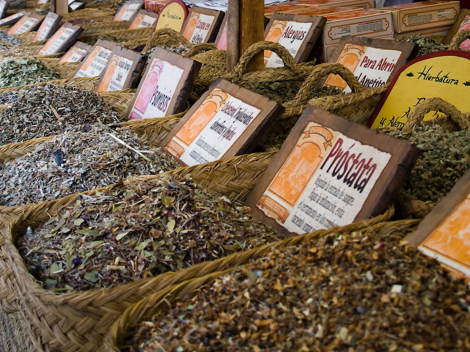
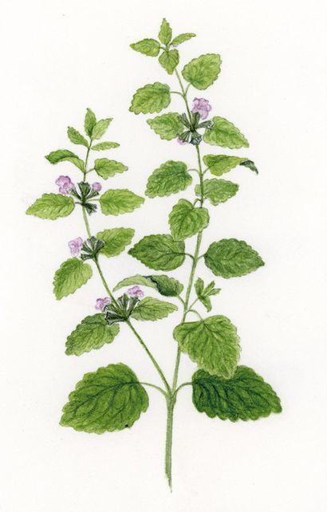
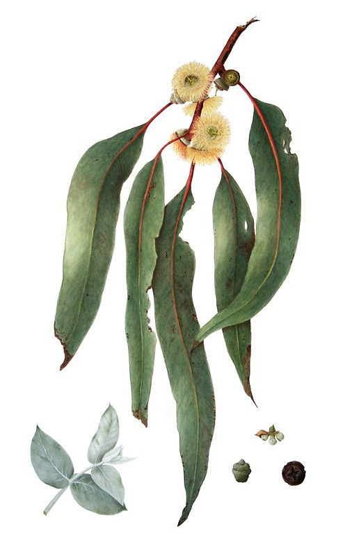
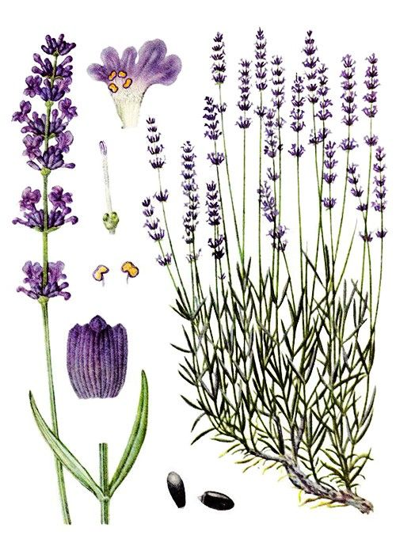
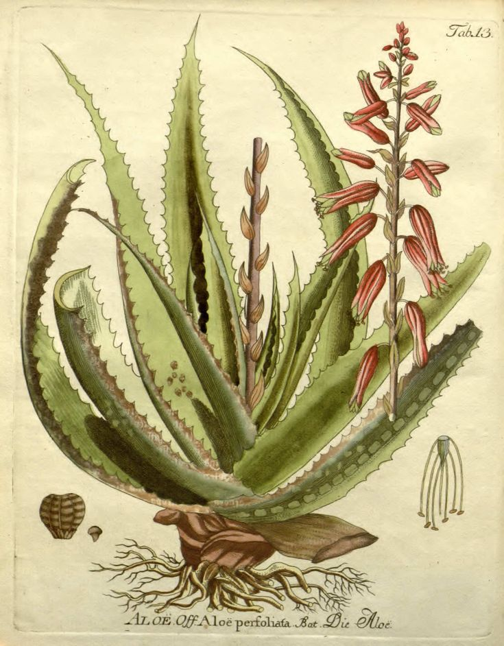
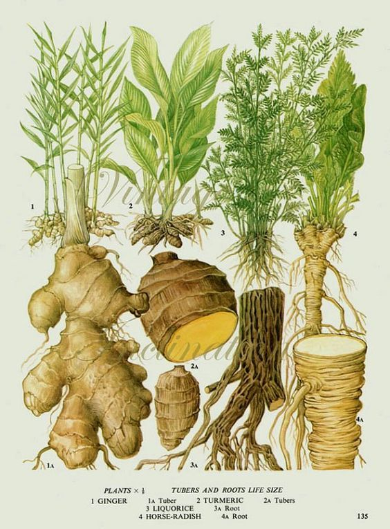

Herbolaria Mexicana

La herbolaria mexicana es una práctica ancestral que ha sido parte integral de la cultura y la medicina tradicional de los pueblos indígenas de México durante miles de años. Su historia es rica y compleja, reflejando la vasta biodiversidad del país y el profundo conocimiento de sus habitantes sobre las propiedades curativas de las plantas.
Orígenes Prehispánicos


La herbolaria en México tiene sus raíces en las civilizaciones prehispánicas como los mexicas, mayas, zapotecas, y otros grupos indígenas. Estas culturas desarrollaron un conocimiento profundo sobre las plantas medicinales, sus usos, y las formas de prepararlas. Los tlahmatinime (sabios o curanderos) eran responsables de recopilar y transmitir este conocimiento, y desempeñaban un papel crucial en la salud de la comunidad. Algunas plantas que se utilizaban en la medicina tradicional prehispánica incluyen:
- Cacao: Usado tanto como alimento como medicina, para tratar afecciones como fiebre y problemas intestinales.
- Achiote:Utilizado para tratar problemas digestivos y como antiinflamatorio.
- Nopal:Empleado para tratar heridas, quemaduras y como remedio para problemas digestivos.
- Nopal: Empleado para tratar heridas, quemaduras y como remedio para problemas digestivos.
- Cempasúchil: Usado para tratar enfermedades respiratorias y problemas gastrointestinales.
Época Colonial

Con la llegada de los españoles en el siglo XVI, el conocimiento herbolario de los pueblos indígenas comenzó a documentarse. Un ejemplo destacado es el "Códice Badiano", también conocido como el "Libellus de Medicinalibus Indorum Herbis" (1552), un manuscrito que contiene descripciones detalladas de plantas medicinales mexicanas y sus usos, escrito en latín por el médico indígena Martín de la Cruz y traducido al latín por Juan Badiano. Este códice fue enviado a Europa, lo que permitió que el conocimiento herbolario mexicano se difundiera más allá de las fronteras de América. Durante este periodo, la herbolaria indígena se fusionó con las prácticas medicinales traídas por los españoles, dando lugar a una medicina mestiza que combinaba elementos de ambas tradiciones.
Herbolaria en la Actualidad
Hoy en día, la herbolaria mexicana sigue siendo ampliamente utilizada en todo el país. Los herbolarios, curanderos y parteras continúan desempeñando un papel importante en las comunidades, utilizando plantas medicinales para tratar una amplia variedad de afecciones. Además, hay un interés creciente en la herbolaria dentro del campo de la medicina alternativa y complementaria, tanto en México como a nivel internacional. La herbolaria también ha sido objeto de investigación científica, lo que ha llevado a la validación de algunos de sus usos tradicionales. No obstante, la medicina herbolaria sigue siendo una práctica que combina el conocimiento empírico con un profundo respeto por la naturaleza y las tradiciones culturales.
Plantas Medicinales
Las plantas medicinales son especies vegetales que se utilizan con fines terapéuticos para prevenir, tratar o aliviar diversas afecciones de salud. Su uso se basa en el conocimiento tradicional y en la investigación científica que respalda sus propiedades curativas. Ofrecen un enfoque natural para el cuidado de la salud y continúan siendo una fuente valiosa de tratamientos y remedios. Su uso requiere un conocimiento adecuado para asegurar que se obtengan beneficios sin riesgos para la salud.
- Manzanilla: Se utiliza para aliviar problemas digestivos, como indigestión y cólicos. También tiene propiedades antiinflamatorias y calmantes.
-  Menta: Ayuda a aliviar dolores estomacales, problemas digestivos y resfriados. Es conocida por sus propiedades antiespasmódicas y analgésicas.
-  Eucalipto: Se usa para tratar problemas respiratorios, como la tos y el resfriado. Tiene propiedades expectorantes y antimicrobianas.
-  Lavanda: Conocida por sus propiedades relajantes y ansiolíticas, se usa para aliviar el estrés, la ansiedad y el insomnio.
-  Aloe Vera: Se aplica tópicamente para tratar quemaduras, heridas y problemas de la piel. También se usa internamente para mejorar la digestión y la salud intestinal.
-  Jengibre: Conocido por sus propiedades antiinflamatorias, se usa para aliviar náuseas, mejorar la digestión y reducir el dolor muscular.
Remedios

Los remedios caseros son tratamientos naturales y tradicionales que se preparan utilizando ingredientes simples, generalmente de origen vegetal, para aliviar o tratar diversas afecciones de salud. Estos remedios se basan en el conocimiento ancestral de las propiedades medicinales de las plantas, transmitido de generación en generación. A continuación, se describe en términos generales qué son los remedios caseros y cómo se utilizan.
Propiedades Terapéuticas de las Plantas Medicinales

Las plantas medicinales contienen compuestos activos que tienen efectos terapéuticos sobre el cuerpo humano. Estos compuestos incluyen aceites esenciales, flavonoides, taninos, alcaloides, entre otros, que poseen propiedades antiinflamatorias, antioxidantes, antimicrobianas, digestivas, calmantes, y muchas más. Los remedios caseros aprovechan estos compuestos para tratar afecciones comunes de manera natural y accesible.
Preparación y Administración

Los remedios caseros se preparan de diversas formas, dependiendo de la planta y la condición que se desea tratar:
- Infusiones y Tés: Se preparan vertiendo agua caliente sobre las plantas secas o frescas y dejándolas reposar para extraer sus compuestos activos. Son utilizados para problemas digestivos, resfriados, estrés, entre otros.
- Decocciones: Similar a las infusiones, pero las plantas se hierven durante un tiempo prolongado para extraer los compuestos más difíciles de obtener. Son comunes para tratar afecciones más profundas como la inflamación.
- Aceites y Ungüentos: Se extraen los aceites esenciales de las plantas o se mezclan con otros aceites para aplicar sobre la piel. Son útiles para tratar heridas, dolores musculares, o problemas dermatológicos.
- Vaporizaciones: Se inhala el vapor de plantas medicinales para tratar problemas respiratorios como la congestión nasal y la tos.
- Tinturas: Se preparan macerando plantas en alcohol para crear una solución concentrada que se toma en pequeñas dosis. Son utilizadas para fortalecer el sistema inmunológico y otros usos sistémicos.
PRECAUCIONES Y LIMITACIONES.

Aunque los remedios caseros con plantas medicinales son naturales, no están exentos de riesgos. Algunas plantas pueden causar alergias, interacciones con medicamentos o efectos adversos si no se usan correctamente. Además, no todos los remedios son adecuados para todas las personas, especialmente en casos de embarazo, lactancia, o enfermedades crónicas. Por ello, es recomendable consultar con un profesional de la salud antes de comenzar cualquier tratamiento con remedios caseros.